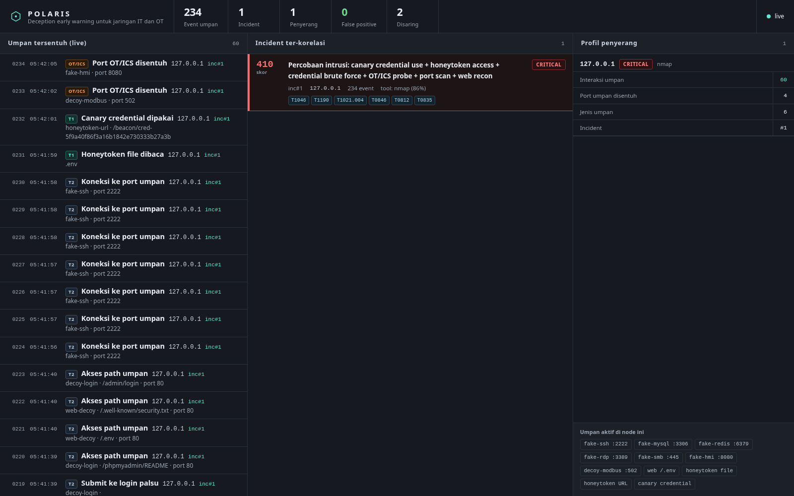

Firewall menahan yang terlihat. POLARIS menangkap yang menyembunyikan diri.
Kami menanam umpan di tempat yang hanya menarik bagi penyerang: port palsu, berkas
kredensial, kunci SSH, panel admin, dan perangkat OT tiruan. Umpan itu tidak
pernah dipakai operasi normal, jadi setiap sentuhan adalah bukti intent, bukan
tebakan statistik.
Sumber angka: satu kali demo/demo.sh pada 25 Oktober 2026, satu host,
penyerang dan sensor di mesin yang sama. Rinciannya ada di bagian
Bukti.
Tiga masalah struktural, bukan kekurangan alat
01
Alert fatigue
IDS dan SIEM berbasis anomali menghasilkan ratusan sampai ribuan alert per hari.
Mayoritas keliru. Sinyal penting tenggelam di antara noise, dan analis berhenti
mempercayai sistemnya.
02
Penyerang yang sudah masuk jadi tak terlihat
Perangkat perimeter tidak melihat apa yang terjadi setelah initial access.
Pemindaian internal, lateral movement, dan pencarian kredensial berjalan di dalam,
di jalur yang dianggap tepercaya.
03
Konteks jaringan militer
Banyak jaringan TNI AD terisolasi atau air-gap, dan mencampur IT dengan OT
seperti SCADA, PLC, serta HMI. Solusi yang bergantung pada cloud atau threat
intelligence eksternal tidak bisa dipasang di sana.
Kesalahan terbesarnya: mencoba menebak arti kata normal
Deteksi klasik menghabiskan tenaga untuk memisahkan lalu lintas normal dari yang
mencurigakan. Pemisahan itu sifatnya probabilistik, dan di situlah false positive
lahir. POLARIS membalik logikanya. Kami tidak menebak, kami menanam sesuatu yang
secara desain mustahil disentuh pengguna sah.
Perbedaan pendekatan, satu kolom dibaca sebagai pasangan
IDS atau IPS konvensional
POLARIS
Deteksi probabilistik lewat anomali
Deteksi deterministik lewat umpan
Ribuan alert, banyak yang keliru
Sedikit alert, berasal dari bukti sentuhan
Perlu tuning ambang batas
Tidak ada ambang batas untuk dituning
Bergantung pada pola serangan yang sudah dikenal
Bergantung pada satu fakta: tidak ada pengguna sah di umpan
Butuh cloud atau threat intelligence
Sepenuhnya on-prem, jalan di jaringan tertutup
Hanya IT
IT dan OT atau ICS
Apa yang ditanam
Seluruh daftar di bawah ini adalah isi nyata dari satu binary agen Go. Tidak ada
dependensi eksternal, hanya pustaka standar Go termasuk syscall untuk
pemantauan berkas lewat inotify.
32 listener port umpan
Satu proses membuka semua port ini dan mencatat setiap koneksi
beserta potongan payload-nya.
:21 ftp
:23 telnet
:25 smtp
:80 http
:135 msrpc
:139 netbios
:443 https
:445 smb
:502 modbus
:1080 socks
:1433 mssql
:1521 oracle
:2049 nfs
:2222 ssh
:2375 docker
:3306 mysql
:3389 rdp
:5000 http-alt
:5432 postgres
:5900 vnc
:5985 winrm
:6379 redis
:7001 weblogic
:8001 http-alt
:8080 hmi
:8443 https-alt
:8888 http-alt
:9000 portainer
:9200 elasticsearch
:10000 webmin
:11211 memcached
:27017 mongodb
11 berkas honeytoken
Dipantau dengan inotify. Membaca isinya sudah cukup untuk memicu
event, tanpa perlu ada proses yang mengeksekusi apa pun.
.env
credentials.txt
id_rsa_backup
.aws/credentials
.git/config
vault-token.txt
k8s-prod.yaml
backup_db.sql
wp-config.php.bak
passwords.xlsx
Kredensial canary
Kredensial palsu yang ditanam di berkas umpan. Di dalamnya ada URL
beacon khusus. Siapa pun yang memakai kredensial itu akan menghubungi URL tersebut,
dan itu bukti langsung bahwa kredensial sudah dipanen dan dipakai.
Decoy OT dan ICS
Modbus TCP pada :502, HMI pada :8080, plus banner perangkat.
Proba satu perangkat menyentuh sebagian topologi, dan itu tampak di satu peta
insiden, bukan tersebar.
Alur dari sentuhan sampai keputusan
Tanam
Agen menaruh umpan dan membuka listener. Setiap umpan punya alamat yang tidak
pernah dipakai operasi normal, jadi tidak ada aktivitas sah yang bisa salah dibaca.
Tangkap
Setiap koneksi, setiap pembacaan berkas, dan setiap permintaan HTTP dicatat
lengkap dengan waktu, alamat sumber, potongan payload, dan sidik jari berkas.
Saring
Aktivitas jinak yang sudah dikenal, termasuk health check internal, disisihkan
ke jalur terpisah dan tetap disimpan untuk audit. Angkanya muncul di dashboard
sebagai baris Disaring, bukan dihapus diam-diam.
Korelasi dan nilai
Event dari satu sumber digabung menjadi satu incident, diberi skor severity,
dan dipetakan ke teknik ATT&CK. Pola koneksi dipakai untuk menebak tool penyerang
beserta tingkat keyakinannya.
Umumkan
Insiden muncul langsung di dashboard lewat WebSocket, dan ringkasan dikirim ke
Telegram atau webhook. Ringkasannya ditulis dari data, bukan dari templat.
Bukti dari eksekusi nyata
Yang di bawah ini dijalankan dengan alat penyerang sungguhan: nmap untuk
pengintaian layanan, masscan untuk penyapuan cepat, nikto
untuk pemeriksaan web, dan hydra untuk credential spray ke SSH.

Dashboard, kondisi setelah demo. Log umpan di kiri masih mentah dan
berurutan. Incident di tengah adalah hasil korelasi, 234 event menjadi satu baris.
Profil di kanan merangkum sumber yang sama menjadi empat angka.
Ringkasan otomatis yang dihasilkan sistem
IP 127.0.0.1 memicu 234 interaksi umpan dalam 1.5 menit (canary credential use, port
scan, credential brute force, OT/ICS probe, honeytoken access, web recon), menyentuh
10 jenis umpan berbeda. Ciri pola mengarah ke nmap dengan keyakinan 86%. Terdapat
probing terhadap decoy protokol OT/ICS, potensi ancaman ke proses fisik. Kredensial
umpan (canary) terbukti digunakan, indikasi kuat kompromi. Tidak ada aktivitas sah
dari IP ini terhadap umpan.
Severity
CRITICAL
Skor
410
Event ter-korelasi
234
Tool terduga
nmap (86%)
Jenis umpan tersentuh
10
False positive
0
12 teknik ATT&CK
Dikelompokkan per taktik supaya bisa dibaca, bukan dinding 12 label.
Reconnaissance
T1595
Discovery
T1046, T1083
Initial Access
T1190
Lateral Movement
T1021.004
Credential Access
T1110, T1552
Defense Evasion
T1078
ICS Discovery
T0846
ICS Credential Access
T0812
ICS Impact
T0835, T0836
Atribusi tool beserta alasannya
Ciri pola yang dibandingkan, bukan sekadar tebakan nama.
Tool
Ciri yang menjadi dasar
nmap
Koneksi bertahap per port, jeda tidak rata, pemeriksaan versi layanan
masscan
Laju sangat tinggi, banyak port pada satu waktu
hydra
Percobaan login berulang pada port yang sama
curl atau wget
Satu permintaan HTTP, satu user agent tetap
Decoy SSH tidak pernah memberi akses
Ini hasil yang kami lihat, bukan klaim. Hydra memang tersambung dan
mengirim banner, tetapi setiap percobaan berakhir putus. Umpan tidak memiliki akun
sah. Setiap percobaan tetap tercatat, jadi serangan yang gagal tetap menjadi
peringatan dini.
Menjalankannya
Agen berupa satu binary Go tanpa dependensi. Collector dan engine berjalan dengan
Python dan FastAPI. Dashboard adalah berkas statis tanpa build step.
Untuk jaringan tertutup, ada mode local dari binary yang sudah ada.
Nyalakan seluruh tumpukan saat mengembangkan
bash scripts/dev-up.sh
Dashboard tersedia di http://127.0.0.1:8787. Untuk
mematikan, bash scripts/dev-down.sh.
Jalankan demo penyerangan sungguhan
AUTO=0 bash demo/demo.sh
Setiap langkah berhenti menunggu tombol Enter, sehingga cocok untuk
rekaman video. Isinya nmap, masscan, nikto, hydra, dan probe Modbus.
Batas yang kami akui
Bagian ini ditulis supaya tidak ada klaim yang lebih besar dari buktinya.
Demo berjalan di satu host. Penyerang dan sensor berada di mesin
yang sama, jadi sumber tercatat sebagai 127.0.0.1. Mode standalone untuk banyak node
sudah ada di kode, tetapi belum kami uji di jaringan terpisah.
Pembacaan berkas umpan tidak bisa dipisahkan per proses. inotify
melaporkan bahwa berkas dibaca, bukan proses mana yang membacanya. Alamat sumber
untuk event jenis ini selalu sama.
Atribusi tool adalah perkiraan. Angka keyakinan dihitung dari ciri
pola yang kami kumpulkan. Penyerang yang menulis alatnya sendiri bisa menyamarkan
pola itu.
Ringkasan otomatis bersifat deterministik. Saat ini ringkasan
disusun dari templat yang diisi data, tanpa model bahasa. Kualitasnya bergantung
pada fakta yang benar-benar tercatat.
Umpan OT atau ICS bersifat tiruan, bukan perangkat asli. Yang
dideteksi adalah pola probe, bukan perilaku protokol industri yang lengkap.